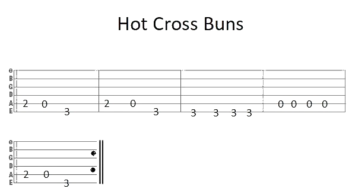

With any instrument, it is important to know the different components. This makes communicating with your fellow guitarists easier as you are both using the same terminology. This will also be useful when tuning your guitar and changing your strings. The following descriptions and diagrams apply to someone who strums with their right and holds down chords with their left hand.
What do the Xs over the diagrams denote? An X above a particular string means
you do not play that string as part of strumming the chord. You may play all six strings when playing an E
major chord. You should start from the 5th string (A) when playing an A major chord and the 4th string (D)
when playing a D major chord.
Why are the diagrams in grid format? This is because each line denotes the
start of a new fret. The thick line denotes the nut. The thinner lines divide each fret one by one.
What do the black circles denote? The black circles denote where you are
supposed to place your fingers. For example, all the strings held down in the A major chord are in the
second fret. You hold down strings in the first and second frets to play E major and the second and third
strings to play D major.
Which are the lower pitched strings? The lowest pitched string is always on the
left-hand side and the highest pitched string is always on the right-hand side of the diagram.
What can I play with these three chords? Here's a popular Snow Patrol song
you can play with these chords. Listen to the song first to get a feel for the rhythm before playing it
yourself. Click here to find the song.
Tab is a way to write guitar music without the player having to read sheet music. It displays six lines, each representing a string on the guitar. As in English, you read from left to right before moving down to the next line. A zero denotes that you play an open string(do not hold any fingers down on the string). Each subsequent number denotes which fret you should hold(like 4 for the 4th fret). See if you can play Hot Cross Buns from the tab below.
